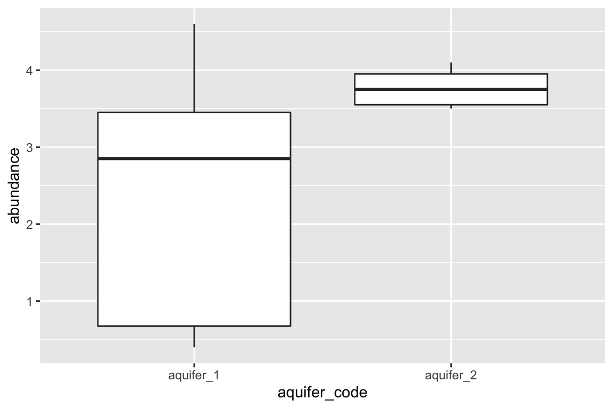
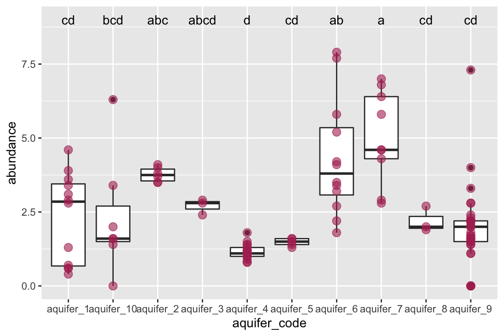

Chapter 16 comparing means
Often, we want to know if our study subjects contain different amounts of certain analytes. For example, “Does this lake over here contain more potassium than that lake over there?” For this, we need statistical tests. Here, we will have a look at comparing mean values for analyte abundance in situations with two samples and in situations with more than two samples.
To run these statistical analyses, we will use the R package rstatix. Please install it with install.packages("rstatix"). Load it into your R session using library(rstatix).
##
## Attaching package: 'rstatix'
## The following object is masked from 'package:stats':
##
## filter16.1 two means
When there are just two means, we can use a t-test. In R, we will use the function t_test(), which is pipe-friendly. We can send it the data we want to run the test on and we just need to give it the formula it should use.
Let’s use the hawaii_aquifers data as an example. Suppose we want to know if there is a difference in the amount of potassium in the two aquifers. Let’s first plot the data:
source("https://thebustalab.github.io/R_For_Chemists/custom_functions/chem.R")
hawaii_aquifers %>%
dplyr::filter(analyte == "K" & aquifer_code %in% c("aquifer_1", "aquifer_2")) %>%
ggplot(aes(x = aquifer_code, y = abundance)) + geom_boxplot()
Based on these distributions, it looks like there might be! Let’s run a t-test. We need to tell R t_test(y~x), where y is the dependant variable, and x is the independent variable:
hawaii_aquifers %>%
dplyr::filter(analyte == "K" & aquifer_code %in% c("aquifer_1", "aquifer_2")) %>%
t_test(abundance ~ aquifer_code)
## # A tibble: 1 x 8
## .y. group1 group2 n1 n2 statistic df p
## <chr> <chr> <chr> <int> <int> <dbl> <dbl> <dbl>
## 1 abundance aquifer_1 aquifer_2 12 6 -3.23 12.2 0.00712A p-value of 0.00712. This is below the cut-off value (alpha) of 0.05 - so, this means that there is a significant difference between these means!
16.2 more than two means
In the previous section we compared two means. What if we want to compare means from more than two study subjects? We need to invoke a two-step process - first, an analysis of variance (ANOVA), followed by Tukey’s honest significant difference tests (Tukey’s HSD). Let’s look at each in turn. We will again suppose we want to know if there is a difference in the amount of potassium in the aquifers, but this time we are not just interested in two aquifers, but rather all of them. Let’s plot the data:
K_data <- hawaii_aquifers %>%
dplyr::filter(analyte == "K")
K_data
## # A tibble: 110 x 6
## aquifer_code well_name longitude latitude analyte abundance
## <chr> <chr> <dbl> <dbl> <chr> <dbl>
## 1 aquifer_1 Alewa_Heights_Spring NA NA K 0.6
## 2 aquifer_1 Beretania_High_Service NA NA K 3.1
## 3 aquifer_1 Beretania_Low_Service NA NA K 3.6
## 4 aquifer_1 Kuliouou_Well -158. 21.3 K 3.9
## 5 aquifer_1 Manoa_Well_II -158. 21.3 K 0.6
## 6 aquifer_1 Moanalua_Wells_Pump_1 -158. 21.4 K 2.9
## 7 aquifer_1 Moanalua_Wells_Pump_2 -158. 21.4 K 2.8
## 8 aquifer_1 Moanalua_Wells_Pump_3 -158. 21.4 K 3.4
## 9 aquifer_1 Nuuanu_Aerator_Well -158. 21.4 K 0.4
## 10 aquifer_1 Palolo_Tunnel -158. 21.3 K 0.7
## # … with 100 more rows
ggplot(data = K_data, aes(x = aquifer_code, y = abundance)) +
geom_boxplot() +
geom_point(color = "maroon", alpha = 0.6, size = 3)
16.2.1 ANOVA
We will use the anova_test function from the package rstatix. It will tell us if any of the means in the data are statistically different from one another. However, if there are differences between the means, it will not tell us which of them are different.
anova_test(data = K_data, formula = abundance ~ aquifer_code)
## Coefficient covariances computed by hccm()
## # A tibble: 1 x 7
## Effect DFn DFd F p `p<.05` ges
## <chr> <dbl> <dbl> <dbl> <dbl> <chr> <dbl>
## 1 aquifer_code 9 100 10.0 7.72e-11 * 0.474A p-value of 7.7e-11! There are definitely some significant differences among this group. In the next section we’ll look at how to determine which means are different from one another.
16.2.2 Tukey’s HSD
Tukey’s Honest Significant Difference (implemented using tukey_hsd) will essentially run t-test on all the pairs of study subjects that we can derive from our data set (in this example, aquifer_1 vs. aquifer_2, aquifer_1 vs. aquifer_3, etc.). After that, it will correct the p-values according to the number of comparisons that it performed. This controls the rate of type I error that we can expect from the test. These corrected values are provided to us in the p.adj column.
tukey_hsd(x = K_data, formula = abundance ~ aquifer_code)
## # A tibble: 45 x 9
## term group1 group2 null.value estimate conf.low conf.high p.adj
## <chr> <chr> <chr> <dbl> <dbl> <dbl> <dbl> <dbl>
## 1 aqui… aquif… aquif… 0 0.00357 -2.00 2.01 1.00e+0
## 2 aqui… aquif… aquif… 0 1.44 -0.668 3.55 4.56e-1
## 3 aqui… aquif… aquif… 0 0.375 -2.35 3.10 1.00e+0
## 4 aqui… aquif… aquif… 0 -1.15 -2.75 0.437 3.68e-1
## 5 aqui… aquif… aquif… 0 -0.845 -3.09 1.40 9.68e-1
## 6 aqui… aquif… aquif… 0 1.98 0.261 3.71 1.15e-2
## 7 aqui… aquif… aquif… 0 2.70 0.837 4.56 3.56e-4
## 8 aqui… aquif… aquif… 0 -0.125 -2.85 2.60 1.00e+0
## 9 aqui… aquif… aquif… 0 -0.378 -1.78 1.03 9.97e-1
## 10 aqui… aquif… aquif… 0 1.44 -0.910 3.79 6.13e-1
## # … with 35 more rows, and 1 more variable: p.adj.signif <chr>We can also determine groups that our data fall into based on the results from the Tukey test:
groups_based_on_tukey <- tukey_groups(data = K_data, formula = abundance ~ aquifer_code)
groups_based_on_tukey
## # A tibble: 10 x 2
## treatment group
## <fct> <fct>
## 1 aquifer_7 a
## 2 aquifer_6 ab
## 3 aquifer_2 abc
## 4 aquifer_3 abcd
## 5 aquifer_10 bcd
## 6 aquifer_1 cd
## 7 aquifer_8 cd
## 8 aquifer_9 cd
## 9 aquifer_5 cd
## 10 aquifer_4 dWe can use the output from tukey_groups to annotate our plot:
ggplot(data = K_data, aes(x = aquifer_code, y = abundance)) +
geom_boxplot() +
geom_point(color = "maroon", alpha = 0.6, size = 3) +
geom_text(data = groups_based_on_tukey, aes(x = treatment, y = 9, label = group))
Excellent! This plot shows us, using the letters above each aquifer, which means are the same and which are different. If a letter is shared among the labels above two aquifers, it means that their means do not differ significantly. For example, aquifer 2 and aquifer 6 both have “b” in their labels, so their means are not different - and are the same as those of aquifers 3 and 10.
16.3 Further reading
For more on this topic, please check out this website